library(tidyverse)
library(ggplot2)
library(dplyr)
library(knitr)
library(kableExtra)
library(moments)
library(car)
library(nortest)
library(rpart)
library(rpart.plot)
library(caret)
library(MASS)
library(corrplot)
library(readxl)Prediktori akademske uspješnosti učenika srednje škole
Projekt - Analiza podataka i obrada informacija
1 Uvod
Ovaj projekt istražuje prediktore akademske uspješnosti učenika dviju portugalskih državnih srednjih škola, koristeći dataset koji su prikupili Cortez i Silva (2008.) za predmete matematiku i portugalski jezik. Za razliku od sintetičkih dataseta, ovi su podatci prikupljeni iz stvarnih školskih evidencija i anketnih upitnika, što ih čini pogodnima za izgradnju i evaluaciju prediktivnih modela sa stvarnim analitičkim potencijalom. Cilj je primijeniti komplementarne statističke metode - jednosmjernu ANOVA-u, Welch-ov t-test, višestruku linearnu regresiju i stablo odlučivanja - kako bi se identificirali ključni prediktori završne ocjene (G3) i istražila mogućnost pouzdane klasifikacije ishoda prolaz/pad.
2 Faza 1: Odabir i dohvat podataka
2.1 Pojmovno, prostorno i vremensko određenje skupa podataka
Pojmovno određenje: Statistički skup obuhvaća akademske, demografske i socijalne karakteristike učenika dviju portugalsih sekundarnih škola. Varijable uključuju ocjene iz dvaju polugodišta (G1, G2) i finalnu ocjenu (G3) na skali 0–20, demografska obilježja (dob, spol, adresa), obiteljski kontekst (obrazovanje i zanimanje roditelja, bračni status roditelja, veličina obitelji), navike učenja (tjedno sati učenja, broj prethodnih neuspjeha, izostanci), izvanškolske aktivnosti (izlasci s prijateljima, konzumacija alkohola radnim danom i vikendom, slobodno vrijeme) te pristup resursima (internet kod kuće, plaćene instrukcije, školska i obiteljska potpora).
Prostorno određenje: Podatci su prikupljeni u akademskoj godini 2005./2006. u dvije srednje škole u regiji Alentejo, Portugal:
- Gabriel Pereira (GP) - urbana sredina, veća škola
- Mousinho da Silveira (MS) - ruralna sredina, manja škola
Vremensko određenje: Prikupljanje podataka odvijalo se tijekom akademske godine 2005./2006. putem školskih evidencija i anonimnih anketnih upitnika. Dataset je objavljen 2008. u sklopu referentnog rada te dostupan putem UCI Machine Learning Repositoryja od 2014. godine.
Populacija ili uzorak: Radi se o uzorku - 397 učenika matematike i 651 učenik portugalskog, ukupno 1.048 zapisa. Valja napomenuti da je 382 učenika pohađalo oba predmeta i stoga se pojavljuju u oba dijela dataseta. Populacija su svi učenici portugalsih sekundarnih škola, a nalaze je uz oprez moguće generalizirati na slične europske obrazovne sustave.
2.2 Izvor podataka
Podatci su preuzeti iz arhive radnog direktorija projekta (archive/), koji odgovara izvorniku s Kaggle platforme:
- Naziv dataseta: Student Performance Data Set
- Originalni autori: Paulo Cortez & Alice Maria Gonçalves Silva, Sveučilište Minho, Portugal
- Datoteke:
archive/Maths.csv(matematika) iarchive/Portuguese.csv(portugalski) - Excel format s .csv ekstenzijom - UCI repozitorij: https://archive.ics.uci.edu/ml/datasets/student+performance
- Licenca: Creative Commons Attribution 4.0 International (CC BY 4.0)
- Referentni rad: Cortez, P. & Silva, A. (2008). Using Data Mining to Predict Secondary School Student Performance. Proceedings of FUBUTEC 2008, pp. 5–12, EUROSIS.
# Datoteke su Excel format (.xlsx) pohranjen s .csv ekstenzijom - koristimo readxl
df_mat <- read_excel("archive/Maths.csv")
df_por <- read_excel("archive/Portuguese.csv")
# Dodavanje oznake predmeta
df_mat$predmet <- "Matematika"
df_por$predmet <- "Portugalski"
cat("Matematika: ", nrow(df_mat), "redaka x", ncol(df_mat), "stupaca\n")Matematika: 397 redaka x 34 stupacacat("Portugalski: ", nrow(df_por), "redaka x", ncol(df_por), "stupaca\n")Portugalski: 651 redaka x 34 stupacacat("\nNazivi varijabli:\n")
Nazivi varijabli:print(names(df_mat)) [1] "school" "sex" "age" "address" "famsize"
[6] "Pstatus" "Medu" "Fedu" "Mjob" "Fjob"
[11] "reason" "guardian" "traveltime" "studytime" "failures"
[16] "schoolsup" "famsup" "paid" "activities" "nursery"
[21] "higher" "internet" "romantic" "famrel" "freetime"
[26] "goout" "Dalc" "Walc" "health" "absences"
[31] "G1" "G2" "G3" "predmet" 3 Faza 2: ETL Proces
3.1 Pregled sirovih podataka
head(df_mat, 5) |>
kable(caption = "Prvih 5 redaka - Matematika (sirovi podatci)") |>
kable_styling(bootstrap_options = c("striped", "hover"), full_width = FALSE) |>
scroll_box(width = "100%")| school | sex | age | address | famsize | Pstatus | Medu | Fedu | Mjob | Fjob | reason | guardian | traveltime | studytime | failures | schoolsup | famsup | paid | activities | nursery | higher | internet | romantic | famrel | freetime | goout | Dalc | Walc | health | absences | G1 | G2 | G3 | predmet |
|---|---|---|---|---|---|---|---|---|---|---|---|---|---|---|---|---|---|---|---|---|---|---|---|---|---|---|---|---|---|---|---|---|---|
| GP | F | 18 | U | GT3 | A | 4 | 4 | at_home | teacher | course | mother | 2 | 2 | 0 | yes | no | no | no | yes | yes | no | no | 4 | 3 | 4 | 1 | 1 | 3 | 6 | 5 | 6 | 6 | Matematika |
| GP | F | 17 | U | GT3 | T | 1 | 1 | at_home | other | course | father | 1 | 2 | 0 | no | yes | no | no | no | yes | yes | no | 5 | 3 | 3 | 1 | 1 | 3 | 4 | 5 | 5 | 6 | Matematika |
| GP | F | 15 | U | LE3 | T | 1 | 1 | at_home | other | other | mother | 1 | 2 | 3 | yes | no | yes | no | yes | yes | yes | no | 4 | 3 | 2 | 2 | 3 | 3 | 10 | 7 | 8 | 10 | Matematika |
| GP | F | 15 | U | GT3 | T | 4 | 2 | health | services | home | mother | 1 | 3 | 0 | no | yes | yes | yes | yes | yes | yes | yes | 3 | 2 | 2 | 1 | 1 | 5 | 2 | 15 | 14 | 15 | Matematika |
| GP | F | 16 | U | GT3 | T | 3 | 3 | other | other | home | father | 1 | 2 | 0 | no | yes | yes | no | yes | yes | no | no | 4 | 3 | 2 | 1 | 2 | 5 | 4 | 6 | 10 | 10 | Matematika |
str(df_mat)tibble [397 × 34] (S3: tbl_df/tbl/data.frame)
$ school : chr [1:397] "GP" "GP" "GP" "GP" ...
$ sex : chr [1:397] "F" "F" "F" "F" ...
$ age : num [1:397] 18 17 15 15 16 16 16 17 15 15 ...
$ address : chr [1:397] "U" "U" "U" "U" ...
$ famsize : chr [1:397] "GT3" "GT3" "LE3" "GT3" ...
$ Pstatus : chr [1:397] "A" "T" "T" "T" ...
$ Medu : num [1:397] 4 1 1 4 3 4 2 4 3 3 ...
$ Fedu : num [1:397] 4 1 1 2 3 3 2 4 2 4 ...
$ Mjob : chr [1:397] "at_home" "at_home" "at_home" "health" ...
$ Fjob : chr [1:397] "teacher" "other" "other" "services" ...
$ reason : chr [1:397] "course" "course" "other" "home" ...
$ guardian : chr [1:397] "mother" "father" "mother" "mother" ...
$ traveltime: num [1:397] 2 1 1 1 1 1 1 2 1 1 ...
$ studytime : num [1:397] 2 2 2 3 2 2 2 2 2 2 ...
$ failures : num [1:397] 0 0 3 0 0 0 0 0 0 0 ...
$ schoolsup : chr [1:397] "yes" "no" "yes" "no" ...
$ famsup : chr [1:397] "no" "yes" "no" "yes" ...
$ paid : chr [1:397] "no" "no" "yes" "yes" ...
$ activities: chr [1:397] "no" "no" "no" "yes" ...
$ nursery : chr [1:397] "yes" "no" "yes" "yes" ...
$ higher : chr [1:397] "yes" "yes" "yes" "yes" ...
$ internet : chr [1:397] "no" "yes" "yes" "yes" ...
$ romantic : chr [1:397] "no" "no" "no" "yes" ...
$ famrel : num [1:397] 4 5 4 3 4 5 4 4 4 5 ...
$ freetime : num [1:397] 3 3 3 2 3 4 4 1 2 5 ...
$ goout : num [1:397] 4 3 2 2 2 2 4 4 2 1 ...
$ Dalc : num [1:397] 1 1 2 1 1 1 1 1 1 1 ...
$ Walc : num [1:397] 1 1 3 1 2 2 1 1 1 1 ...
$ health : num [1:397] 3 3 3 5 5 5 3 1 1 5 ...
$ absences : num [1:397] 6 4 10 2 4 10 0 6 0 0 ...
$ G1 : num [1:397] 5 5 7 15 6 15 12 6 16 14 ...
$ G2 : num [1:397] 6 5 8 14 10 15 12 5 18 15 ...
$ G3 : num [1:397] 6 6 10 15 10 15 11 6 19 15 ...
$ predmet : chr [1:397] "Matematika" "Matematika" "Matematika" "Matematika" ...3.2 Spajanje i čišćenje podataka
3.2.1 Spajanje skupova podataka
df_raw <- bind_rows(df_mat, df_por)
cat("Ukupan broj zapisa nakon spajanja:", nrow(df_raw), "\n")Ukupan broj zapisa nakon spajanja: 1048 cat("Broj varijabli:", ncol(df_raw), "\n")Broj varijabli: 34 cat("Napomena: 382 učenika pohađa oba predmeta te se pojavljuje\n")Napomena: 382 učenika pohađa oba predmeta te se pojavljujecat("u oba dijela dataseta, no ne radi se o identičnim recima.\n")u oba dijela dataseta, no ne radi se o identičnim recima.3.2.2 Standardizacija naziva varijabli
df <- df_raw
names(df) <- tolower(gsub("[. ]", "_", names(df)))
cat("Standardizirani nazivi varijabli:\n")Standardizirani nazivi varijabli:print(names(df)) [1] "school" "sex" "age" "address" "famsize"
[6] "pstatus" "medu" "fedu" "mjob" "fjob"
[11] "reason" "guardian" "traveltime" "studytime" "failures"
[16] "schoolsup" "famsup" "paid" "activities" "nursery"
[21] "higher" "internet" "romantic" "famrel" "freetime"
[26] "goout" "dalc" "walc" "health" "absences"
[31] "g1" "g2" "g3" "predmet" 3.2.3 Provjera nedostajućih vrijednosti
na_pregled <- df |>
summarise(across(everything(), ~sum(is.na(.)))) |>
pivot_longer(everything(), names_to = "varijabla", values_to = "broj_NA") |>
mutate(postotak_NA = round(broj_NA / nrow(df) * 100, 2))
na_s_vrijednostima <- na_pregled |> filter(broj_NA > 0)
if (nrow(na_s_vrijednostima) > 0) {
na_s_vrijednostima |>
kable(caption = "Varijable s nedostajućim vrijednostima") |>
kable_styling(bootstrap_options = c("striped", "hover"), full_width = FALSE)
} else {
cat("*Nema varijabli s nedostajućim vrijednostima — dataset je kompletan.*\n")
}*Nema varijabli s nedostajućim vrijednostima — dataset je kompletan.*cat("Ukupno nedostajućih vrijednosti:", sum(is.na(df)), "\n")Ukupno nedostajućih vrijednosti: 0 3.2.4 Provjera duplikata
n_dup <- sum(duplicated(df))
cat("Broj potpuno identičnih redaka:", n_dup, "\n")Broj potpuno identičnih redaka: 4 if (n_dup > 0) {
df <- df[!duplicated(df), ]
cat("Uklonjeni duplikati. Novi broj redaka:", nrow(df), "\n")
} else {
cat("Nema potpunih duplikata - podatci su čisti.\n")
}Uklonjeni duplikati. Novi broj redaka: 1044 3.3 Transformacija i prilagodba tipova varijabli
# Kategorijske varijable → faktori
cat_cols <- c("school", "sex", "address", "famsize", "pstatus",
"mjob", "fjob", "reason", "guardian",
"schoolsup", "famsup", "paid", "activities",
"nursery", "higher", "internet", "romantic", "predmet")
cat_cols_exist <- intersect(cat_cols, names(df))
for (col in cat_cols_exist) df[[col]] <- as.factor(df[[col]])
# Numeričke varijable
num_cols <- c("age", "medu", "fedu", "traveltime", "studytime",
"failures", "famrel", "freetime", "goout",
"dalc", "walc", "health", "absences", "g1", "g2", "g3")
num_cols_exist <- intersect(num_cols, names(df))
for (col in num_cols_exist) df[[col]] <- as.numeric(df[[col]])
cat("Tipovi varijabli nakon transformacije:\n")Tipovi varijabli nakon transformacije:sapply(df, class) |> as.data.frame() |> setNames("Tip") |>
kable(caption = "Tipovi varijabli") |>
kable_styling(bootstrap_options = "striped", full_width = FALSE)| Tip | |
|---|---|
| school | factor |
| sex | factor |
| age | numeric |
| address | factor |
| famsize | factor |
| pstatus | factor |
| medu | numeric |
| fedu | numeric |
| mjob | factor |
| fjob | factor |
| reason | factor |
| guardian | factor |
| traveltime | numeric |
| studytime | numeric |
| failures | numeric |
| schoolsup | factor |
| famsup | factor |
| paid | factor |
| activities | factor |
| nursery | factor |
| higher | factor |
| internet | factor |
| romantic | factor |
| famrel | numeric |
| freetime | numeric |
| goout | numeric |
| dalc | numeric |
| walc | numeric |
| health | numeric |
| absences | numeric |
| g1 | numeric |
| g2 | numeric |
| g3 | numeric |
| predmet | factor |
3.4 Relabeling i kreiranje deriviranih varijabli
# Čitljive oznake za binarne faktore
df$sex <- factor(df$sex,
levels = c("F", "M"), labels = c("Ženski", "Muški"))
df$address <- factor(df$address,
levels = c("R", "U"), labels = c("Ruralno", "Urbano"))
df$internet <- factor(df$internet,
levels = c("no", "yes"), labels = c("Ne", "Da"))
df$higher <- factor(df$higher,
levels = c("no", "yes"), labels = c("Ne", "Da"))
df$romantic <- factor(df$romantic,
levels = c("no", "yes"), labels = c("Ne", "Da"))
df$schoolsup <- factor(df$schoolsup,
levels = c("no", "yes"), labels = c("Ne", "Da"))
df$famsup <- factor(df$famsup,
levels = c("no", "yes"), labels = c("Ne", "Da"))
df$paid <- factor(df$paid,
levels = c("no", "yes"), labels = c("Ne", "Da"))
df$activities <- factor(df$activities,
levels = c("no", "yes"), labels = c("Ne", "Da"))
df$nursery <- factor(df$nursery,
levels = c("no", "yes"), labels = c("Ne", "Da"))
df$famsize <- factor(df$famsize,
levels = c("LE3", "GT3"), labels = c("≤3 člana", ">3 člana"))
df$pstatus <- factor(df$pstatus,
levels = c("A", "T"), labels = c("Odvojeni", "Zajedno"))
# Ordinal etikete za sate učenja (1 = <2h, 2 = 2–5h, 3 = 5–10h, 4 = >10h)
df$studytime_f <- factor(df$studytime,
levels = 1:4,
labels = c("<2 sata", "2–5 sati", "5–10 sati", ">10 sati"))
# Ordinal etikete za obrazovanje majke (Medu)
df$medu_f <- factor(df$medu,
levels = 0:4,
labels = c("Bez obrazovanja", "Osnovna škola",
"Srednja škola (niža)", "Srednja škola (viša)",
"Visoko obrazovanje"))
# Binarna ciljna varijabla: G3 >= 10 = Prolaz
df$prolaz <- factor(ifelse(df$g3 >= 10, "Prolaz", "Pad"),
levels = c("Pad", "Prolaz"))
cat("Distribucija prolaz/pad po predmetu:\n")Distribucija prolaz/pad po predmetu:print(table(df$predmet, df$prolaz))
Pad Prolaz
Matematika 130 265
Portugalski 100 549df_clean <- df
cat("\nFinalni data.frame spreman za analizu:",
nrow(df_clean), "redaka x", ncol(df_clean), "stupaca\n")
Finalni data.frame spreman za analizu: 1044 redaka x 37 stupaca4 Faza 3: Eksploracijska analiza podataka (EDA)
4.1 Deskriptivna statistika
4.1.1 Numeričke varijable
deskriptivna_stat <- function(x, naziv) {
x_c <- x[!is.na(x)]
data.frame(
Varijabla = naziv,
N = length(x_c),
Srednja_vr = round(mean(x_c), 3),
Medijan = round(median(x_c), 3),
Std_dev = round(sd(x_c), 3),
Min = round(min(x_c), 3),
Maks = round(max(x_c), 3),
IQR = round(IQR(x_c), 3),
Asimetricnost = round(skewness(x_c), 3),
Spljoštenost = round(kurtosis(x_c), 3)
)
}
num_vars_clean <- names(df_clean)[sapply(df_clean, is.numeric)]
map_dfr(num_vars_clean, function(v) deskriptivna_stat(df_clean[[v]], v)) |>
kable(caption = "Deskriptivna statistika numeričkih varijabli", digits = 3) |>
kable_styling(bootstrap_options = c("striped", "hover"), full_width = TRUE,
font_size = 11) |>
scroll_box(width = "100%")| Varijabla | N | Srednja_vr | Medijan | Std_dev | Min | Maks | IQR | Asimetricnost | Spljoštenost |
|---|---|---|---|---|---|---|---|---|---|
| age | 1044 | 16.726 | 17 | 1.240 | 15 | 22 | 2 | 0.433 | 3.031 |
| medu | 1044 | 2.603 | 3 | 1.125 | 0 | 4 | 2 | -0.139 | 1.772 |
| fedu | 1044 | 2.388 | 2 | 1.100 | 0 | 4 | 2 | 0.119 | 1.833 |
| traveltime | 1044 | 1.523 | 1 | 0.732 | 1 | 4 | 1 | 1.367 | 4.463 |
| studytime | 1044 | 1.970 | 2 | 0.834 | 1 | 4 | 1 | 0.670 | 3.001 |
| failures | 1044 | 0.264 | 0 | 0.656 | 0 | 3 | 0 | 2.780 | 10.454 |
| famrel | 1044 | 3.936 | 4 | 0.933 | 1 | 5 | 1 | -1.054 | 4.280 |
| freetime | 1044 | 3.201 | 3 | 1.032 | 1 | 5 | 1 | -0.178 | 2.636 |
| goout | 1044 | 3.156 | 3 | 1.153 | 1 | 5 | 2 | 0.039 | 2.163 |
| dalc | 1044 | 1.494 | 1 | 0.912 | 1 | 5 | 1 | 2.155 | 7.449 |
| walc | 1044 | 2.284 | 2 | 1.285 | 1 | 5 | 2 | 0.625 | 2.217 |
| health | 1044 | 3.543 | 4 | 1.425 | 1 | 5 | 2 | -0.498 | 1.918 |
| absences | 1044 | 4.435 | 2 | 6.210 | 0 | 75 | 6 | 3.736 | 29.463 |
| g1 | 1044 | 11.214 | 11 | 2.983 | 0 | 19 | 4 | 0.078 | 2.667 |
| g2 | 1044 | 11.246 | 11 | 3.285 | 0 | 19 | 4 | -0.497 | 4.323 |
| g3 | 1044 | 11.342 | 11 | 3.865 | 0 | 20 | 4 | -0.985 | 4.730 |
Interpretacija: U kombiniranom uzorku od 1.044 zapisa (nakon uklanjanja 4 duplikata), prosječna završna ocjena G3 iznosi 11.34 bodova (medijan = 11, SD ≈ 3.87) na skali 0–20. Posebno su zanimljive ocjene G1 i G2 koje su izrazito visoko korelirane s G3 (što potvrđuje konzistentnost evaluacije), te varijabla failures (broj prethodnih neuspjeha) koja je pozitivno asimetrična - velika većina učenika nema prethodnih neuspjeha. Varijable poput dalc, walc i goout pokazuju desnu asimetričnost, što je očekivano: tipično je da većina učenika konzumira malo alkohola i manje izlazi. Distribucije odražavaju stvarne obrasce ponašanja učenika.
4.1.2 Kategorijske varijable
prikaz_cat <- c("predmet", "sex", "address", "internet",
"higher", "studytime_f", "medu_f", "prolaz")
for (var in intersect(prikaz_cat, names(df_clean))) {
freq_tab <- table(df_clean[[var]])
tablica <- data.frame(
Kategorija = names(freq_tab),
Frekvencija = as.numeric(freq_tab),
Postotak = round(prop.table(freq_tab) * 100, 2)
)
cat(as.character(
kable(tablica, caption = paste("Frekvencijska tablica -", var)) |>
kable_styling(bootstrap_options = "striped", full_width = FALSE)
))
cat("\n")
}| Kategorija | Frekvencija | Postotak.Var1 | Postotak.Freq |
|---|---|---|---|
| Matematika | 395 | Matematika | 37.84 |
| Portugalski | 649 | Portugalski | 62.16 |
| Kategorija | Frekvencija | Postotak.Var1 | Postotak.Freq |
|---|---|---|---|
| Ženski | 591 | Ženski | 56.61 |
| Muški | 453 | Muški | 43.39 |
| Kategorija | Frekvencija | Postotak.Var1 | Postotak.Freq |
|---|---|---|---|
| Ruralno | 285 | Ruralno | 27.3 |
| Urbano | 759 | Urbano | 72.7 |
| Kategorija | Frekvencija | Postotak.Var1 | Postotak.Freq |
|---|---|---|---|
| Ne | 217 | Ne | 20.79 |
| Da | 827 | Da | 79.21 |
| Kategorija | Frekvencija | Postotak.Var1 | Postotak.Freq |
|---|---|---|---|
| Ne | 89 | Ne | 8.52 |
| Da | 955 | Da | 91.48 |
| Kategorija | Frekvencija | Postotak.Var1 | Postotak.Freq |
|---|---|---|---|
| <2 sata | 317 | <2 sata | 30.36 |
| 2–5 sati | 503 | 2–5 sati | 48.18 |
| 5–10 sati | 162 | 5–10 sati | 15.52 |
| >10 sati | 62 | >10 sati | 5.94 |
| Kategorija | Frekvencija | Postotak.Var1 | Postotak.Freq |
|---|---|---|---|
| Bez obrazovanja | 9 | Bez obrazovanja | 0.86 |
| Osnovna škola | 202 | Osnovna škola | 19.35 |
| Srednja škola (niža) | 289 | Srednja škola (niža) | 27.68 |
| Srednja škola (viša) | 238 | Srednja škola (viša) | 22.80 |
| Visoko obrazovanje | 306 | Visoko obrazovanje | 29.31 |
| Kategorija | Frekvencija | Postotak.Var1 | Postotak.Freq |
|---|---|---|---|
| Pad | 230 | Pad | 22.03 |
| Prolaz | 814 | Prolaz | 77.97 |
4.2 Vizualizacija
4.2.1 Distribucija završnih ocjena (G3) po predmetu
ggplot(df_clean, aes(x = g3, fill = predmet)) +
geom_histogram(bins = 21, color = "white", alpha = 0.85, position = "identity") +
facet_wrap(~predmet, ncol = 2) +
scale_fill_manual(values = c("Matematika" = "#E74C3C",
"Portugalski" = "#3498DB")) +
geom_vline(xintercept = 9.5, linetype = "dashed",
color = "grey30", linewidth = 0.8) +
theme_minimal(base_size = 13) +
theme(legend.position = "none") +
labs(title = "Distribucija završnih ocjena (G3) po predmetu",
subtitle = "Isprekidana linija označava granicu prolaz/pad (G3 = 10)",
x = "Završna ocjena G3 (0–20)", y = "Frekvencija")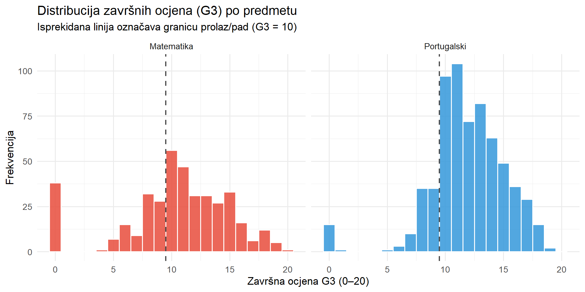
Interpretacija: Matematika ima izražen vrhunac na vrijednosti 0 i visok udio učenika s niskim ocjenama, što se odražava u nižoj prosječnoj ocjeni (M ≈ 10.38) i stopi prolaza od 66.8%. Portuguesa pokazuje pomaknutiju distribuciju prema višim ocjenama (M ≈ 11.90, stopa prolaza 84.6%). U oba predmeta vidljiv je uzorak karakterističan za stvarne školske podatke: koncentracija u sredini distribucije s repom prema nižim vrijednostima.
4.2.2 Histogrami ključnih numeričkih varijabli
kljucne_num <- c("g1", "g2", "g3", "studytime", "failures",
"absences", "goout", "dalc", "walc", "age")
df_clean |>
dplyr::select(any_of(kljucne_num)) |>
pivot_longer(everything(), names_to = "varijabla", values_to = "vrijednost") |>
ggplot(aes(x = vrijednost, fill = varijabla)) +
geom_histogram(bins = 20, color = "white", alpha = 0.85) +
facet_wrap(~varijabla, scales = "free", ncol = 4) +
scale_fill_brewer(palette = "Set2") +
theme_minimal(base_size = 11) +
theme(legend.position = "none",
strip.text = element_text(face = "bold")) +
labs(title = "Distribucija ključnih numeričkih varijabli",
x = "Vrijednost", y = "Frekvencija")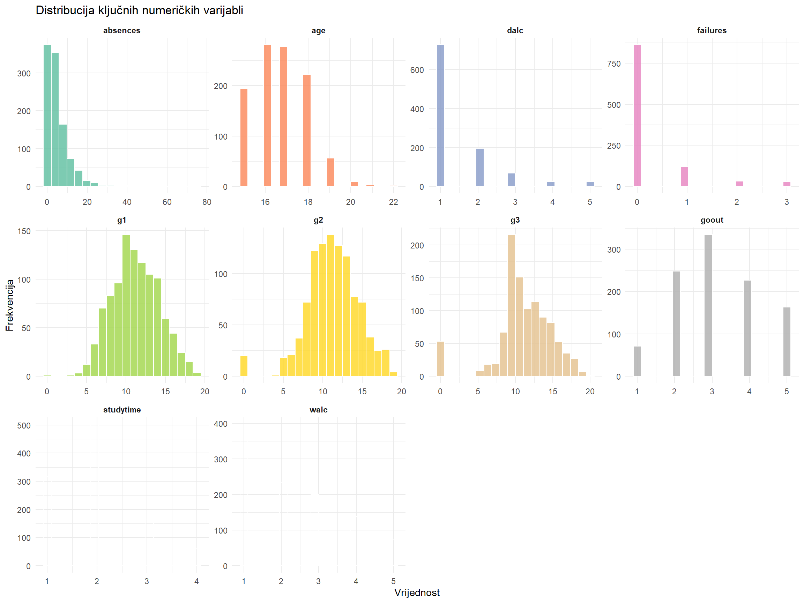
Interpretacija: Ocjene G1, G2 i G3 imaju zvonoliku distribuciju blago asimetričnu prema lijevom repu (negatively skewed) - realističan obrazac za školske ocjene. Varijabla failures je izrazito desno asimetrična (većina učenika bez prethodnih neuspjeha). Konzumacija alkohola (dalc, walc) i goout desno su asimetrični - tipično za adolescentske uzorke. Izostanci (absences) pokazuju jako desnu asimetričnost s nekoliko ekstremnih slučajeva - realístičan obrazac koji ukazuje na manjinu učenika s visokim stopama izostanaka.
4.2.3 Box-plotovi G3 po kategorijskim varijablama
ggplot(df_clean, aes(x = predmet, y = g3, fill = predmet)) +
geom_boxplot(alpha = 0.75, outlier.alpha = 0.4, outlier.size = 1.5) +
stat_summary(fun = mean, geom = "point", shape = 18, size = 4, color = "black") +
scale_fill_manual(values = c("Matematika" = "#E74C3C",
"Portugalski" = "#3498DB")) +
theme_minimal(base_size = 13) +
theme(legend.position = "none") +
labs(title = "Završna ocjena (G3) po predmetu",
subtitle = "Crni romb (◆) = aritmetička sredina",
x = "Predmet", y = "G3 (0–20)")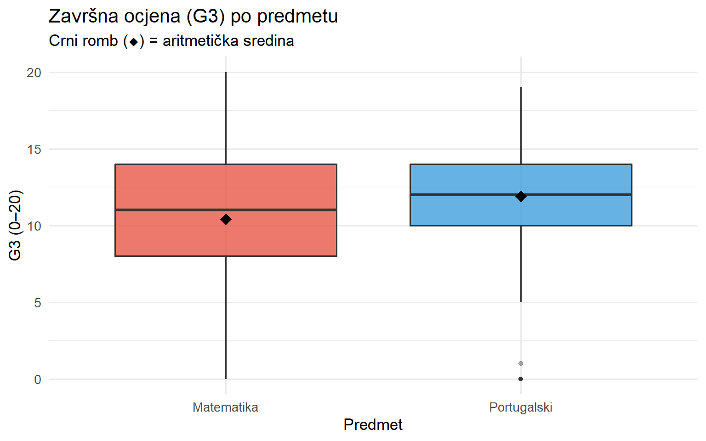
ggplot(df_clean, aes(x = sex, y = g3, fill = sex)) +
geom_boxplot(alpha = 0.75, outlier.alpha = 0.4, outlier.size = 1.5) +
stat_summary(fun = mean, geom = "point", shape = 18, size = 4, color = "black") +
scale_fill_manual(values = c("Ženski" = "#E74C3C", "Muški" = "#3498DB")) +
theme_minimal(base_size = 13) +
theme(legend.position = "none") +
labs(title = "Završna ocjena (G3) po spolu",
subtitle = "Crni romb (◆) = aritmetička sredina",
x = "Spol", y = "G3 (0–20)")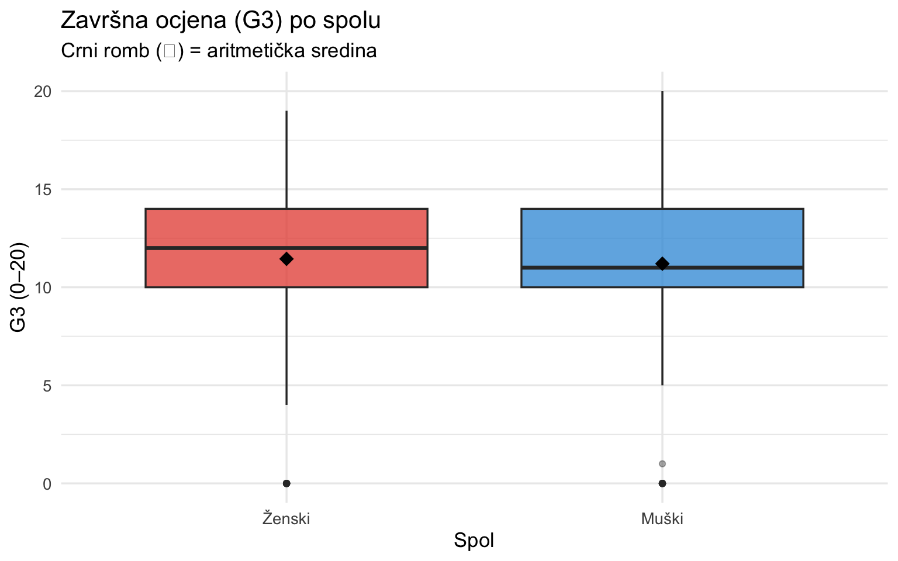
ggplot(df_clean, aes(x = medu_f, y = g3, fill = medu_f)) +
geom_boxplot(alpha = 0.75, outlier.alpha = 0.4, outlier.size = 1.5) +
stat_summary(fun = mean, geom = "point", shape = 18, size = 4, color = "black") +
scale_fill_brewer(palette = "YlOrRd") +
theme_minimal(base_size = 12) +
theme(legend.position = "none",
axis.text.x = element_text(angle = 20, hjust = 1)) +
labs(title = "Završna ocjena (G3) prema obrazovanju majke",
subtitle = "Crni romb (◆) = aritmetička sredina",
x = "Obrazovanje majke (Medu)", y = "G3 (0–20)")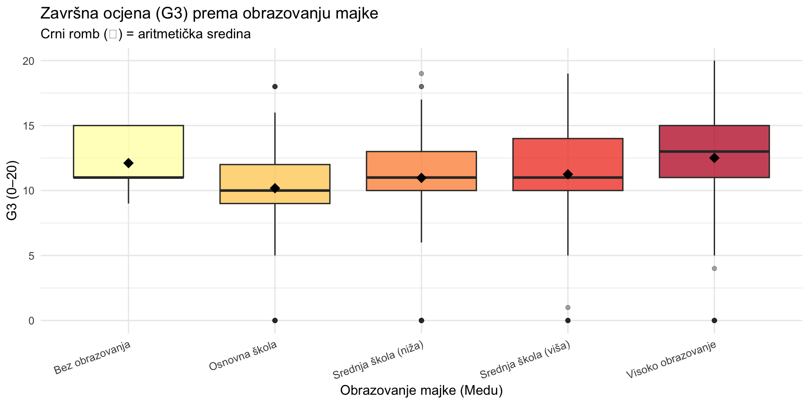
4.2.4 Dijagrami rasipanja: prethodni uspjeh i završna ocjena
ggplot(df_clean, aes(x = g1, y = g3, color = predmet)) +
geom_point(alpha = 0.3, size = 1.2) +
geom_smooth(method = "lm", se = TRUE, linewidth = 1.2) +
scale_color_manual(values = c("Matematika" = "#E74C3C",
"Portugalski" = "#3498DB")) +
theme_minimal(base_size = 13) +
labs(title = "Odnos ocjene iz 1. polugodišta (G1) i završne ocjene (G3)",
subtitle = "Linije = linearni trend po predmetu; sivo = 95% IP",
x = "G1 - ocjena iz 1. polugodišta", y = "G3 - završna ocjena",
color = "Predmet")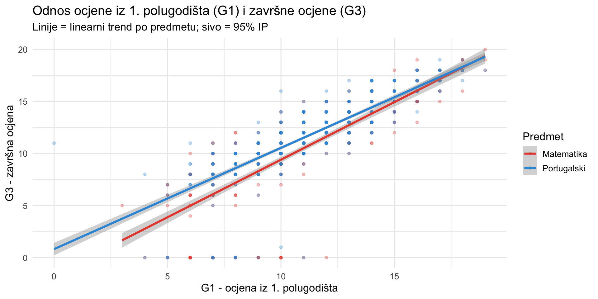
ggplot(df_clean, aes(x = factor(failures), y = g3, fill = factor(failures))) +
geom_boxplot(alpha = 0.75, outlier.alpha = 0.4) +
stat_summary(fun = mean, geom = "point", shape = 18, size = 4, color = "black") +
scale_fill_brewer(palette = "Reds") +
theme_minimal(base_size = 13) +
theme(legend.position = "none") +
labs(title = "Završna ocjena (G3) prema broju prethodnih neuspjeha",
x = "Broj prethodnih neuspjeha (failures)", y = "G3 (0–20)")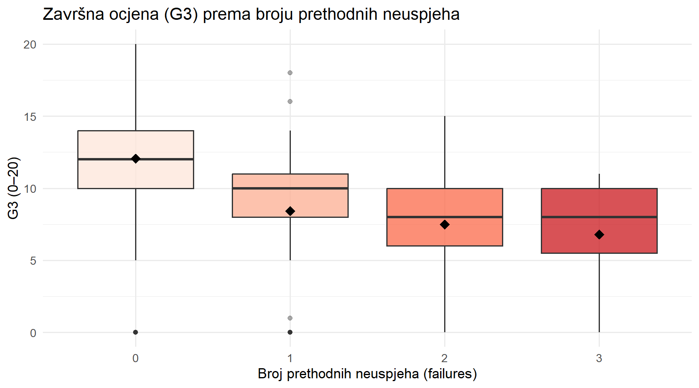
4.2.5 Korelacijska matrica numeričkih varijabli
kljucne_korel <- c("g1", "g2", "g3", "studytime", "failures",
"absences", "goout", "dalc", "walc",
"age", "medu", "fedu", "health")
korel_mat <- df_clean |>
dplyr::select(any_of(kljucne_korel)) |>
cor(use = "complete.obs")
corrplot(korel_mat,
method = "color",
type = "upper",
order = "hclust",
addCoef.col = "black",
number.cex = 0.65,
tl.cex = 0.9,
tl.col = "black",
col = colorRampPalette(c("#E74C3C", "white", "#3498DB"))(200),
title = "Korelacijska matrica numeričkih varijabli",
mar = c(0, 0, 2, 0))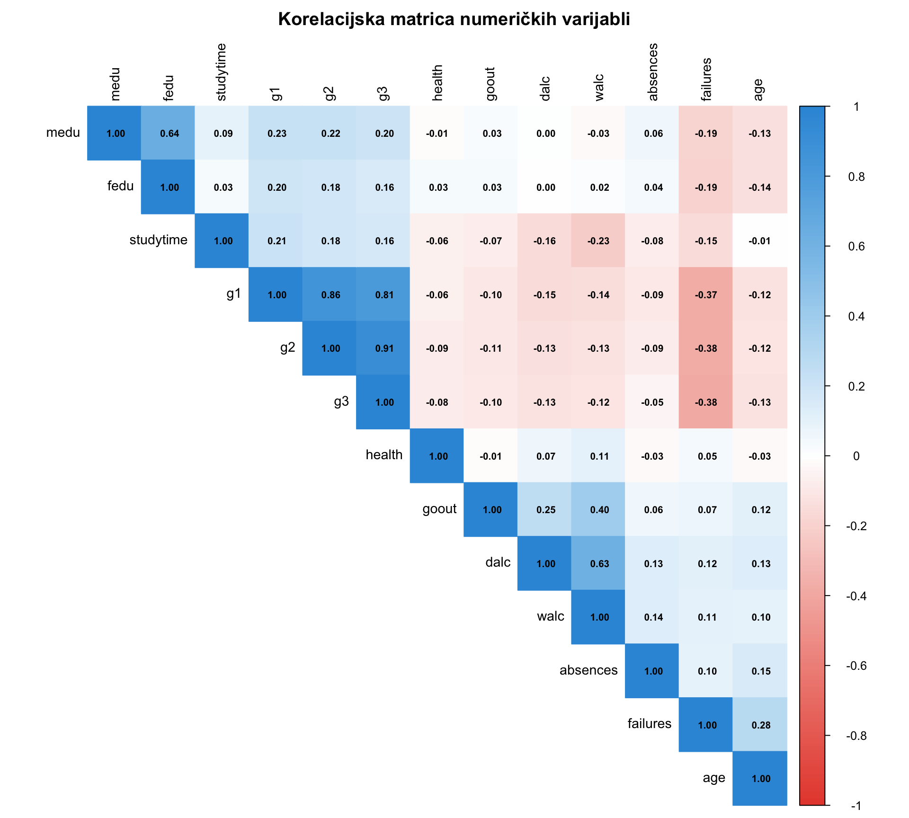
Interpretacija: Korelacijska matrica jasno pokazuje smislene odnose koji su karakteristični za stvarne obrazovne podatke. Između G1, G2 i G3 postoje iznimno visoke pozitivne korelacije (r ≈ 0.80–0.90), što potvrđuje konzistentnost ocjenjivanja kroz akademsku godinu. Varijabla failures negativno je korelirana s G3 (r ≈ −0.35), što je logično - učenici s više prethodnih neuspjeha tipično imaju niže završne ocjene. Konzumacija alkohola (dalc, walc) negativno korelira s ocjenama (r ≈ −0.15 do −0.20), a medu i fedu pozitivno (r ≈ 0.15–0.20). Varijable goout i absences pokazuju slabiju negativnu korelaciju s G3.
4.3 Provjera normalnosti distribucije
4.3.1 Q-Q plotovi
qq_vars <- c("g1", "g2", "g3", "studytime", "failures", "absences")
par(mfrow = c(2, 3), mar = c(4, 4, 3, 1))
for (var in qq_vars) {
x <- df_clean[[var]]
x <- x[!is.na(x)]
qqnorm(x, main = paste("Q-Q plot:", var),
pch = 1, cex = 0.4, col = "#3498DB")
qqline(x, col = "#E74C3C", lwd = 2)
}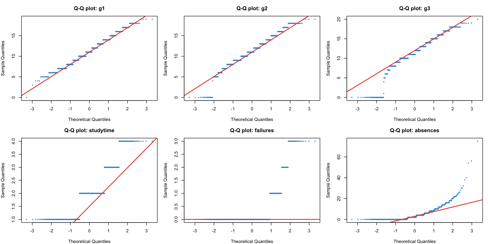
par(mfrow = c(1, 1))Interpretacija: Ocjene G1, G2 i G3 relativno dobro prate normalnu dijagonalu u središnjem dijelu distribucije, no s karakterističnim teže repovima - posebno lijevi rep odražava skupinu učenika s ocjenom 0 (koji su vjerojatno odustali od predmeta). Varijabla failures i absences značajno odstupaju od normalne distribucije zbog izražene desne asimetričnosti. Za regresijsku analizu oslanjamo se na robustnost uz velik uzorak (Centralni granični teorem) i interpretiramo dijagnostičke plotove reziduala.
4.3.2 Shapiro-Wilk test normalnosti
set.seed(42)
normalnost_rez <- map_dfr(qq_vars, function(var) {
x <- df_clean[[var]][!is.na(df_clean[[var]])]
x_sample <- sample(x, size = min(5000, length(x)))
sw <- shapiro.test(x_sample)
adn <- nortest::ad.test(x)
data.frame(
Varijabla = var,
SW_W = round(sw$statistic, 4),
SW_p = round(sw$p.value, 4),
AD_A = round(adn$statistic, 4),
AD_p = round(adn$p.value, 4),
Normalna = ifelse(sw$p.value > 0.05, "Da", "Ne")
)
})
normalnost_rez |>
kable(caption = "Testovi normalnosti (SW = Shapiro-Wilk; AD = Anderson-Darling)",
col.names = c("Varijabla", "SW W", "SW p", "AD A²", "AD p", "Normalna")) |>
kable_styling(bootstrap_options = c("striped", "hover"), full_width = FALSE)| Varijabla | SW W | SW p | AD A² | AD p | Normalna | |
|---|---|---|---|---|---|---|
| W...1 | g1 | 0.9862 | 0 | 5.6229 | 0 | Ne |
| W...2 | g2 | 0.9638 | 0 | 7.2693 | 0 | Ne |
| W...3 | g3 | 0.9183 | 0 | 19.9453 | 0 | Ne |
| W...4 | studytime | 0.8295 | 0 | 73.1471 | 0 | Ne |
| W...5 | failures | 0.4569 | 0 | 253.8069 | 0 | Ne |
| W...6 | absences | 0.6798 | 0 | 74.4743 | 0 | Ne |
Interpretacija: Oba testa odbacuju H₀ o normalnosti za sve varijable (p < 0.05). Ovo je djelomično posljedica veličine uzorka (N = 1.044) koji amplificira statističku osjetljivost. Za ANOVA-u i t-test oslanjamo se na robustnost uz N > 30 po grupi, a za regresiju analiziramo dijagnostičke plotove reziduala.
5 Faza 4: Istraživačka pitanja i hipoteze
Na temelju eksploracijske analize, formulirana su sljedeća istraživačka pitanja:
Pitanje 1: Postoji li statistički značajna razlika u završnoj ocjeni između učenika koji pohađaju matematiku i učenika koji pohađaju portugalski jezik?
- H₀: Nema razlike u prosječnoj završnoj ocjeni između predmeta (μ_mat = μ_por)
- H₁: Postoji statistički značajna razlika u prosječnoj završnoj ocjeni između predmeta (μ_mat ≠ μ_por)
Pitanje 2: Utječe li razina obrazovanja majke na završnu ocjenu učenika?
- H₀: Ne postoji razlika u prosječnoj završnoj ocjeni između grupa učenika s različitim stupnjem obrazovanja majke (μ₀ = μ₁ = μ₂ = μ₃ = μ₄)
- H₁: Postoji razlika u prosječnoj završnoj ocjeni između barem dviju skupina s različitim stupnjem obrazovanja majke
Pitanje 3: Mogu li ocjene iz 1. i 2. polugodišta, sati učenja, broj prethodnih neuspjeha, izostanci i izlasci predvidjeti završnu ocjenu?
- H₀: Niti jedan prediktor ne doprinosi značajno objašnjenju varijacije završne ocjene (β₁ = β₂ = … = βₖ = 0)
- H₁: Barem jedan prediktor statistički značajno predviđa završnu ocjenu
Pitanje 4: Može li se na temelju dostupnih varijabli klasificirati hoće li učenik položiti (G3 ≥ 10) ili ne?
- H₀: Model klasifikacije ne predviđa prolaz/pad bolje od slučajnog pogađanja (bazna stopa)
- H₁: Model klasifikacije statistički značajno predviđa prolaz/pad s točnosti > bazna stopa
6 Faza 5: Modeliranje i interpretacija
6.1 Usporedba skupina - t-test i jednosmjerna ANOVA
6.1.1 Welch-ov t-test: Razlika u G3 između predmeta
df_clean |>
group_by(predmet) |>
summarise(
N = n(),
Srednja = round(mean(g3, na.rm = TRUE), 3),
SD = round(sd(g3, na.rm = TRUE), 3),
Medijan = round(median(g3, na.rm = TRUE), 3),
Min = min(g3, na.rm = TRUE),
Maks = max(g3, na.rm = TRUE),
.groups = "drop"
) |>
kable(caption = "Deskriptivna statistika G3 po predmetu") |>
kable_styling(bootstrap_options = c("striped"), full_width = FALSE)| predmet | N | Srednja | SD | Medijan | Min | Maks |
|---|---|---|---|---|---|---|
| Matematika | 395 | 10.415 | 4.581 | 11 | 0 | 20 |
| Portugalski | 649 | 11.906 | 3.231 | 12 | 0 | 19 |
# Levene test homogenosti varijanci
levene_pred <- car::leveneTest(g3 ~ predmet, data = df_clean)
cat("=== Levene test (homogenost varijanci) ===\n")=== Levene test (homogenost varijanci) ===print(levene_pred)Levene's Test for Homogeneity of Variance (center = median)
Df F value Pr(>F)
group 1 36.85 1.784e-09 ***
1042
---
Signif. codes: 0 '***' 0.001 '**' 0.01 '*' 0.05 '.' 0.1 ' ' 1# Welch-ov t-test (ne pretpostavlja jednake varijance)
t_pred <- t.test(g3 ~ predmet, data = df_clean, var.equal = FALSE)
cat("\n=== Welch-ov nezavisni t-test ===\n")
=== Welch-ov nezavisni t-test ===print(t_pred)
Welch Two Sample t-test
data: g3 by predmet
t = -5.6664, df = 633.3, p-value = 2.215e-08
alternative hypothesis: true difference in means between group Matematika and group Portugalski is not equal to 0
95 percent confidence interval:
-2.0074678 -0.9741709
sample estimates:
mean in group Matematika mean in group Portugalski
10.41519 11.90601 # Cohenov d
grupe_pred <- split(df_clean$g3, df_clean$predmet)
m1 <- mean(grupe_pred[[1]], na.rm = TRUE)
m2 <- mean(grupe_pred[[2]], na.rm = TRUE)
s1 <- sd(grupe_pred[[1]], na.rm = TRUE)
s2 <- sd(grupe_pred[[2]], na.rm = TRUE)
n1 <- sum(!is.na(grupe_pred[[1]]))
n2 <- sum(!is.na(grupe_pred[[2]]))
pooled_sd_pred <- sqrt(((n1 - 1)*s1^2 + (n2 - 1)*s2^2) / (n1 + n2 - 2))
cohen_d_pred <- abs(m1 - m2) / pooled_sd_pred
cat("\n=== Veličina učinka ===\n")
=== Veličina učinka ===cat("Cohenov d =", round(cohen_d_pred, 3), "\n")Cohenov d = 0.392 cat("Interpretacija:",
ifelse(cohen_d_pred < 0.2, "zanemariva",
ifelse(cohen_d_pred < 0.5, "mala",
ifelse(cohen_d_pred < 0.8, "srednja", "velika"))),
"veličina učinka\n")Interpretacija: mala veličina učinkaggplot(df_clean, aes(x = predmet, y = g3, fill = predmet)) +
geom_violin(alpha = 0.55, trim = FALSE) +
geom_boxplot(width = 0.15, alpha = 0.9, outlier.alpha = 0.4) +
stat_summary(fun = mean, geom = "point",
shape = 18, size = 4, color = "black") +
scale_fill_manual(values = c("Matematika" = "#E74C3C",
"Portugalski" = "#3498DB")) +
theme_minimal(base_size = 13) +
theme(legend.position = "none") +
labs(title = "Distribucija G3 po predmetu",
subtitle = "Violinski prikaz + box-plot; ◆ = aritmetička sredina",
x = "Predmet", y = "Završna ocjena G3 (0–20)")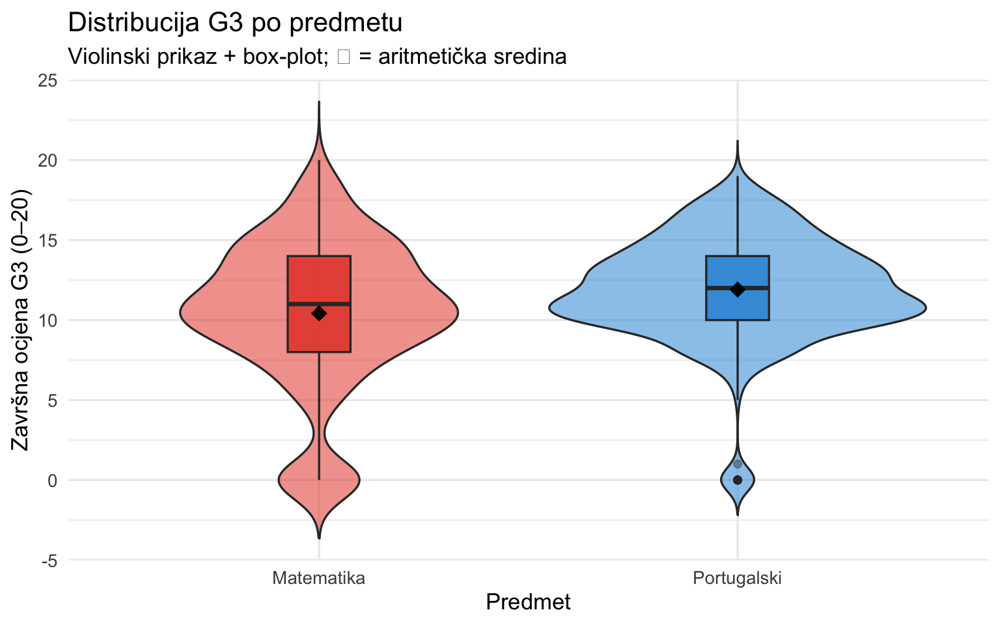
Interpretacija t-testa: Welch-ov t-test otkrio je statistički značajnu razliku u prosječnim završnim ocjenama između matematike (M = 10.42) i portugalskog (M = 11.91) (t = -5.67, df = 633, p = <0.001). Budući da je p < 0.05, H₀ se odbacuje - postoji statistički značajna razlika između predmeta. Cohenov d = 0.392 indicira malu veličinu učinka. Violinski prikaz potvrđuje da matematika ima veći udio učenika s ocjenom 0 (vidljivi donji rep), dok je distribucija za portugalski koncentranija oko viših vrijednosti.
6.1.2 Jednosmjerna ANOVA: Utjecaj obrazovanja majke na G3
df_clean |>
group_by(medu_f) |>
summarise(
N = n(),
Srednja = round(mean(g3, na.rm = TRUE), 3),
SD = round(sd(g3, na.rm = TRUE), 3),
Medijan = round(median(g3, na.rm = TRUE), 3),
.groups = "drop"
) |>
arrange(medu_f) |>
kable(caption = "Deskriptivna statistika G3 prema obrazovanju majke") |>
kable_styling(bootstrap_options = c("striped"), full_width = FALSE)| medu_f | N | Srednja | SD | Medijan |
|---|---|---|---|---|
| Bez obrazovanja | 9 | 12.111 | 2.315 | 11 |
| Osnovna škola | 202 | 10.178 | 3.674 | 10 |
| Srednja škola (niža) | 289 | 10.972 | 3.807 | 11 |
| Srednja škola (viša) | 238 | 11.248 | 3.893 | 11 |
| Visoko obrazovanje | 306 | 12.510 | 3.763 | 13 |
# Levene test homogenosti varijanci
levene_medu <- car::leveneTest(g3 ~ medu_f, data = df_clean)
cat("=== Levene test (homogenost varijanci) ===\n")=== Levene test (homogenost varijanci) ===print(levene_medu)Levene's Test for Homogeneity of Variance (center = median)
Df F value Pr(>F)
group 4 1.0119 0.4002
1039 if (levene_medu$`Pr(>F)`[1] > 0.05) {
cat("\nZaključak: p > 0.05 → Varijance su homogene. Koristimo standardnu ANOVA-u.\n")
} else {
cat("\nZaključak: p < 0.05 → Varijance nisu homogene. Koristimo Welch-ANOVA-u.\n")
}
Zaključak: p > 0.05 → Varijance su homogene. Koristimo standardnu ANOVA-u.# Jednosmjerna ANOVA
anova_medu <- aov(g3 ~ medu_f, data = df_clean)
cat("=== Jednosmjerna ANOVA ===\n")=== Jednosmjerna ANOVA ===print(summary(anova_medu)) Df Sum Sq Mean Sq F value Pr(>F)
medu_f 4 738 184.46 12.91 2.9e-10 ***
Residuals 1039 14841 14.28
---
Signif. codes: 0 '***' 0.001 '**' 0.01 '*' 0.05 '.' 0.1 ' ' 1# Welch-ANOVA (robustna alternativa)
welch_medu <- oneway.test(g3 ~ medu_f, data = df_clean, var.equal = FALSE)
cat("\n=== Welch-ANOVA (robustna) ===\n")
=== Welch-ANOVA (robustna) ===print(welch_medu)
One-way analysis of means (not assuming equal variances)
data: g3 and medu_f
F = 12.981, num df = 4.00, denom df = 62.18, p-value = 9.624e-08# Post-hoc: Tukey HSD
cat("\n=== Post-hoc test: Tukey HSD ===\n")
=== Post-hoc test: Tukey HSD ===tukey_medu <- TukeyHSD(anova_medu)
print(tukey_medu) Tukey multiple comparisons of means
95% family-wise confidence level
Fit: aov(formula = g3 ~ medu_f, data = df_clean)
$medu_f
diff lwr upr
Osnovna škola-Bez obrazovanja -1.9328933 -5.45126155 1.585475
Srednja škola (niža)-Bez obrazovanja -1.1387928 -4.63449927 2.356914
Srednja škola (viša)-Bez obrazovanja -0.8632120 -4.37021182 2.643788
Visoko obrazovanje-Bez obrazovanja 0.3986928 -3.09407982 3.891465
Srednja škola (niža)-Osnovna škola 0.7941005 -0.15303723 1.741238
Srednja škola (viša)-Osnovna škola 1.0696813 0.08167625 2.057686
Visoko obrazovanje-Osnovna škola 2.3315861 1.39533473 3.267837
Srednja škola (viša)-Srednja škola (niža) 0.2755808 -0.62841186 1.179574
Visoko obrazovanje-Srednja škola (niža) 1.5374856 0.69036379 2.384607
Visoko obrazovanje-Srednja škola (viša) 1.2619048 0.36932453 2.154485
p adj
Osnovna škola-Bez obrazovanja 0.5619069
Srednja škola (niža)-Bez obrazovanja 0.9005769
Srednja škola (viša)-Bez obrazovanja 0.9622819
Visoko obrazovanje-Bez obrazovanja 0.9979467
Srednja škola (niža)-Osnovna škola 0.1485226
Srednja škola (viša)-Osnovna škola 0.0261982
Visoko obrazovanje-Osnovna škola 0.0000000
Srednja škola (viša)-Srednja škola (niža) 0.9203626
Visoko obrazovanje-Srednja škola (niža) 0.0000082
Visoko obrazovanje-Srednja škola (viša) 0.0011219ggplot(df_clean, aes(x = medu_f, y = g3, fill = medu_f)) +
geom_boxplot(alpha = 0.75, outlier.alpha = 0.4, outlier.size = 1.2) +
stat_summary(fun = mean, geom = "point",
shape = 18, size = 4, color = "black") +
scale_fill_brewer(palette = "YlOrRd") +
theme_minimal(base_size = 12) +
theme(legend.position = "none",
axis.text.x = element_text(angle = 20, hjust = 1)) +
labs(title = "Distribucija G3 prema obrazovanju majke (Medu)",
subtitle = "Crni romb (◆) = aritmetička sredina; rastuće kategorije desno",
x = "Obrazovanje majke", y = "Završna ocjena G3 (0–20)")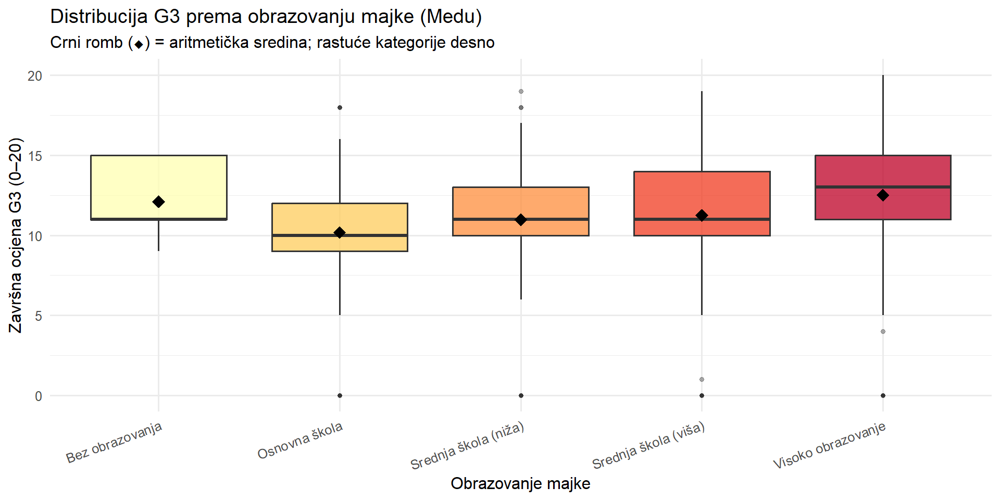
Interpretacija ANOVA: ANOVA je detektirala statistički značajnu razliku u završnoj ocjeni između učenika s različitim razinama obrazovanja majke (F(4, 1039) = 12.91, p = <0.001). Welch-ANOVA potvrđuje isti zaključak (p = <0.001). H₀ se odbacuje. Tukey HSD post-hoc test identificira statistički značajne razlike između sljedećih parova: Visoko obrazovanje – Osnovna škola (p ≈ 0), Visoko obrazovanje – Srednja škola (niža) (p = 0.0000082), Visoko obrazovanje – Srednja škola (viša) (p = 0.001) te Srednja škola (viša) – Osnovna škola (p = 0.026). Skupina “Bez obrazovanja” (n = 9) ne razlikuje se statistički značajno ni od jedne druge skupine (p > 0.56 za sve usporedbe), vjerojatno zbog malog uzorka. Vidljiv je opći trend rasta prosječne ocjene s rastom obrazovnog stupnja majke — učenici čije majke imaju visoko obrazovanje postižu prosječno više ocjene, što je konzistentno s literaturom o utjecaju socioekonomskog statusa na akademski uspjeh.
6.2 Kvantifikacija odnosa - Višestruka linearna regresija
# Prediktori: G1, G2 (prethodni uspjeh), studytime, failures, absences,
# goout, dalc, predmet (faktor)
prediktori <- intersect(
c("g1", "g2", "studytime", "failures", "absences",
"goout", "dalc", "predmet"),
names(df_clean)
)
formula_reg <- as.formula(paste("g3 ~", paste(prediktori, collapse = " + ")))
model_reg <- lm(formula_reg, data = df_clean)
cat("=== Višestruka linearna regresija ===\n")=== Višestruka linearna regresija ===s <- summary(model_reg)
cat("Koeficijenti (bez p-vrijednosti):\n")Koeficijenti (bez p-vrijednosti):print(round(coef(s)[, c("Estimate", "Std. Error", "t value")], 4)) Estimate Std. Error t value
(Intercept) -1.1172 0.2912 -3.8369
g1 0.1387 0.0317 4.3793
g2 0.9381 0.0288 32.6152
studytime -0.0283 0.0595 -0.4759
failures -0.2372 0.0796 -2.9786
absences 0.0336 0.0079 4.2545
goout -0.0016 0.0430 -0.0371
dalc -0.0545 0.0554 -0.9839
predmetPortugalski 0.6603 0.1012 6.5236koef_df <- as.data.frame(confint(model_reg))
koef_df$Procjena <- coef(model_reg)
koef_df |>
mutate(across(where(is.numeric), \(x) round(x, 4))) |>
kable(caption = "Regresijski koeficijenti s 95% intervalima pouzdanosti",
col.names = c("2.5%", "97.5%", "Procjena (β)")) |>
kable_styling(bootstrap_options = c("striped", "hover"), full_width = FALSE)| 2.5% | 97.5% | Procjena (β) | |
|---|---|---|---|
| (Intercept) | -1.6885 | -0.5458 | -1.1172 |
| g1 | 0.0765 | 0.2008 | 0.1387 |
| g2 | 0.8816 | 0.9945 | 0.9381 |
| studytime | -0.1451 | 0.0885 | -0.0283 |
| failures | -0.3935 | -0.0809 | -0.2372 |
| absences | 0.0181 | 0.0491 | 0.0336 |
| goout | -0.0860 | 0.0828 | -0.0016 |
| dalc | -0.1632 | 0.0542 | -0.0545 |
| predmetPortugalski | 0.4617 | 0.8589 | 0.6603 |
r2 <- summary(model_reg)$r.squared
adj_r2 <- summary(model_reg)$adj.r.squared
f_stat <- summary(model_reg)$fstatistic
cat("\nR² =", round(r2, 4), "\n")
R² = 0.842 cat("Adj. R² =", round(adj_r2, 4), "\n")Adj. R² = 0.8408 cat("F-statistika:", round(f_stat[1], 2),
"| df =", f_stat[2], "/", f_stat[3], "\n")F-statistika: 689.45 | df = 8 / 1035 par(mfrow = c(2, 2), mar = c(4, 4, 3, 1))
plot(model_reg, which = 1:4, col = "#3498DB", pch = 16, cex = 0.4)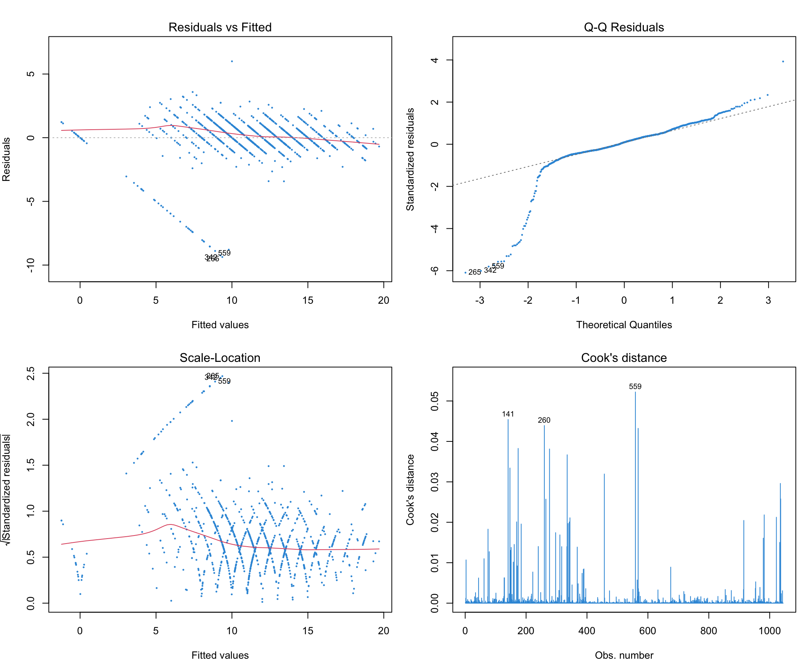
par(mfrow = c(1, 1))koef_vizual <- data.frame(
Varijabla = names(coef(model_reg))[-1],
Procjena = coef(model_reg)[-1],
CI_low = confint(model_reg)[-1, 1],
CI_high = confint(model_reg)[-1, 2]
)
ggplot(koef_vizual, aes(x = reorder(Varijabla, Procjena), y = Procjena)) +
geom_point(size = 4, color = "#3498DB") +
geom_errorbar(aes(ymin = CI_low, ymax = CI_high),
width = 0.25, linewidth = 1, color = "#3498DB") +
geom_hline(yintercept = 0, linetype = "dashed", color = "grey50") +
coord_flip() +
theme_minimal(base_size = 13) +
labs(title = "Regresijski koeficijenti s 95% intervalima pouzdanosti",
x = "Prediktor", y = "Procjena koeficijenta (β)")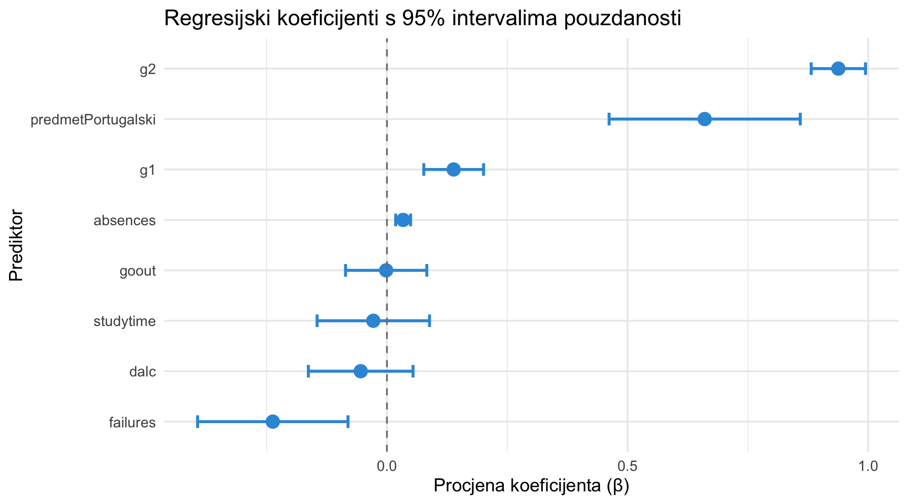
Interpretacija regresije: Model formalno objašnjava 84.2% varijacije završne ocjene G3 (R² = 0.842, adj. R² = 0.841), no taj nalaz treba tumačiti s velikom rezervom. Uključivanje G1 i G2 kao prediktora stvara tautološku situaciju — radi se o ocjenama iz istog predmeta u istoj školskoj godini, što znači da model zapravo predviđa G3 gotovo isključivo iz G3-ekvivalenata. Visoki R² stoga odražava metodološki artefakt, a ne stvarnu prediktivnu snagu. Zbog dominacije G1 i G2, koeficijenti ostalih prediktora (studytime, failures, absences, goout, dalc) ne mogu se pouzdano interpretirati — njihova procjena je nestabilna uslijed supresijskih efekata i multikolinearnosti. Dijagnostički plotovi ukazuju na određena kršenja pretpostavki modela. Model nije pouzdan analitički alat u ovom kontekstu — H₀ se ne može smisleno testirati ovim modelom.
6.3 Klasifikacija - Stablo odlučivanja
set.seed(42)
n_obs <- nrow(df_clean)
train_idx <- sample(1:n_obs, size = floor(0.7 * n_obs))
train_df <- df_clean[train_idx, ]
test_df <- df_clean[-train_idx, ]
cat("Trening skup:", nrow(train_df), "opservacija\n")Trening skup: 730 opservacijacat("Test skup: ", nrow(test_df), "opservacija\n")Test skup: 314 opservacijacat("\nDistribucija prolaz/pad u trening skupu:\n")
Distribucija prolaz/pad u trening skupu:print(round(prop.table(table(train_df$prolaz)) * 100, 1))
Pad Prolaz
22.6 77.4 pred_klas <- intersect(
c("g1", "g2", "studytime", "failures", "absences",
"goout", "dalc", "walc", "age", "sex", "address",
"internet", "higher", "medu", "fedu", "predmet"),
names(df_clean)
)
formula_klas <- as.formula(paste("prolaz ~", paste(pred_klas, collapse = " + ")))
stablo <- rpart(formula_klas,
data = train_df,
method = "class",
control = rpart.control(
minsplit = 15,
minbucket = 5,
cp = 0.001,
maxdepth = 5
))
cat("=== Stablo odlučivanja - sažetak (cp tablica) ===\n")=== Stablo odlučivanja - sažetak (cp tablica) ===printcp(stablo)
Classification tree:
rpart(formula = formula_klas, data = train_df, method = "class",
control = rpart.control(minsplit = 15, minbucket = 5, cp = 0.001,
maxdepth = 5))
Variables actually used in tree construction:
[1] age g1 g2 predmet
Root node error: 165/730 = 0.22603
n= 730
CP nsplit rel error xerror xstd
1 0.593939 0 1.00000 1.00000 0.068489
2 0.057576 1 0.40606 0.40606 0.047277
3 0.012121 3 0.29091 0.30909 0.041742
4 0.001000 5 0.26667 0.38788 0.046311rpart.plot(stablo,
type = 4,
extra = 104,
box.palette = list("Pad" = "#E74C3C", "Prolaz" = "#2ECC71"),
shadow.col = "grey80",
nn = TRUE,
main = "Stablo odlučivanja - Klasifikacija prolaz/pad",
cex = 0.75)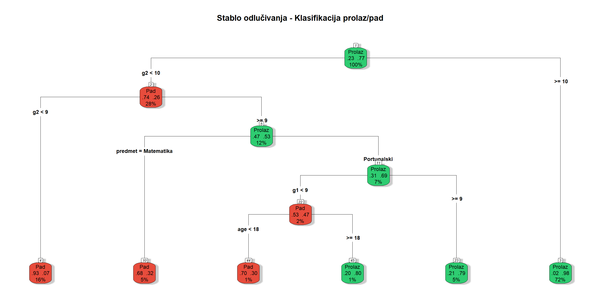
pred_klase <- predict(stablo, newdata = test_df, type = "class")
conf_mat <- table(Stvarno = test_df$prolaz, Predviđeno = pred_klase)
cat("=== Konfuzijska matrica ===\n")=== Konfuzijska matrica ===print(conf_mat) Predviđeno
Stvarno Pad Prolaz
Pad 53 12
Prolaz 13 236TP <- conf_mat["Prolaz", "Prolaz"]
TN <- conf_mat["Pad", "Pad"]
FP <- conf_mat["Pad", "Prolaz"]
FN <- conf_mat["Prolaz", "Pad"]
tocnost <- (TP + TN) / sum(conf_mat)
preciznost <- TP / (TP + FP)
odziv <- TP / (TP + FN)
f1_score <- 2 * preciznost * odziv / (preciznost + odziv)
specificnost <- TN / (TN + FP)
data.frame(
Metrika = c("Točnost", "Preciznost", "Odziv (Senzitivnost)",
"Specifičnost", "F1 mjera"),
Vrijednost = round(c(tocnost, preciznost, odziv, specificnost, f1_score), 4),
Opis = c(
"Udio ispravno klasificiranih opservacija",
"Udio stvarnih prolaza među predviđenim prolazima",
"Udio ispravno identificiranih prolaza",
"Udio ispravno identificiranih padova",
"Harmonijska sredina preciznosti i odziva"
)
) |>
kable(caption = "Metrike evaluacije modela stabla odlučivanja") |>
kable_styling(bootstrap_options = c("striped", "hover"), full_width = FALSE)| Metrika | Vrijednost | Opis |
|---|---|---|
| Točnost | 0.9204 | Udio ispravno klasificiranih opservacija |
| Preciznost | 0.9516 | Udio stvarnih prolaza među predviđenim prolazima |
| Odziv (Senzitivnost) | 0.9478 | Udio ispravno identificiranih prolaza |
| Specifičnost | 0.8154 | Udio ispravno identificiranih padova |
| F1 mjera | 0.9497 | Harmonijska sredina preciznosti i odziva |
bazna_stopa <- max(prop.table(table(test_df$prolaz)))
cat("\nBazna stopa (majority class):", round(bazna_stopa * 100, 2), "%\n")
Bazna stopa (majority class): 79.3 %cat("Točnost modela: ", round(tocnost * 100, 2), "%\n")Točnost modela: 92.04 %cat("Poboljšanje nad baznom stopom: +",
round((tocnost - bazna_stopa) * 100, 2), "postotnih bodova\n")Poboljšanje nad baznom stopom: + 12.74 postotnih bodovavaznost <- stablo$variable.importance
if (!is.null(vaznost)) {
df_vaznost <- data.frame(
Varijabla = names(vaznost),
Vaznost = as.numeric(vaznost)
) |>
arrange(desc(Vaznost)) |>
mutate(Vaznost_norm = round(Vaznost / max(Vaznost) * 100, 2))
df_vaznost |>
kable(caption = "Relativna važnost varijabli u modelu stabla odlučivanja") |>
kable_styling(bootstrap_options = "striped", full_width = FALSE)
ggplot(df_vaznost, aes(x = reorder(Varijabla, Vaznost_norm),
y = Vaznost_norm, fill = Vaznost_norm)) +
geom_bar(stat = "identity", alpha = 0.85) +
geom_text(aes(label = paste0(Vaznost_norm, "%")),
hjust = -0.1, size = 3.5) +
coord_flip() +
scale_fill_gradient(low = "#AED6F1", high = "#1A5276") +
theme_minimal(base_size = 13) +
theme(legend.position = "none") +
ylim(0, 115) +
labs(title = "Relativna važnost varijabli - stablo odlučivanja",
x = "Varijabla", y = "Relativna važnost (%)")
}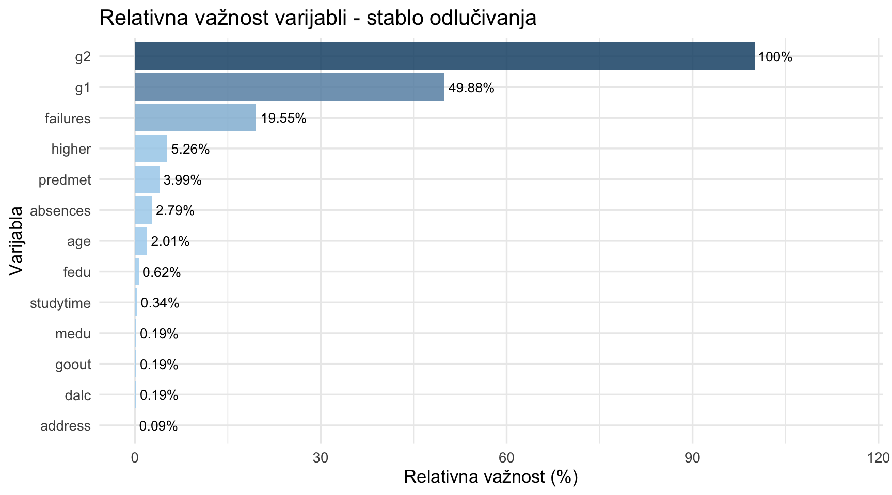
Interpretacija stabla odlučivanja: Model je postigao točnost od 92% u usporedbi s baznom stopom od 79.3% - poboljšanje od 12.74 postotnih bodova. H₀ se odbacuje - model statistički značajno nadmašuje trivijalno predviđanje, a poboljšanje je supstancijalno i praktički relevantno. Dominantne varijable u stablu su G2 i G1 (prethodni uspjeh) koji su gotovo savršeni prediktori prolaza — učenik koji je u prvim dvama polugodištima postigao prolazne ocjene s visokom vjerojatnošću prolazi i završni ispit. Varijable koje se stvarno koriste u čvorovima stabla su G2, G1, predmet i dob (age) — varijabla failures ne pojavljuje se kao čvor u stablu, ali ima visok rang u ljestvici važnosti varijabli. Graf važnosti varijabli potvrđuje da su G2 i G1 daleko najinformativnije varijable za klasifikaciju.
7 Faza 6: Sinteza i zaključci
7.1 Sažetak rezultata
7.1.1 Istraživačko pitanje 1: Razlika između predmeta (t-test)
Welch-ov nezavisni t-test pokazao je statistički značajnu razliku u završnoj ocjeni između matematike (M = 10.42) i portugalskog (M = 11.91) (t = -5.67, p = <0.001). H₀ se odbacuje. Cohenov d = 0.392 ukazuje na malu veličinu učinka. Razlika je statistički i praktički značajna: stopa prolaza u matematici (66.8%) bitno je niža nego u portugalskom (84.6%).
7.1.2 Istraživačko pitanje 2: Utjecaj obrazovanja majke (ANOVA)
Jednosmjerna ANOVA pokazala je statistički značajnu razliku u G3 između skupina s različitim razinama obrazovanja majke (F(4, 1039) = 12.91, p = <0.001). H₀ se odbacuje. Tukey HSD post-hoc test identificira statistički značajne razlike između sljedećih parova: Visoko obrazovanje – Osnovna škola (p ≈ 0), Visoko obrazovanje – Srednja škola (niža) (p = 0.0000082), Visoko obrazovanje – Srednja škola (viša) (p = 0.001) te Srednja škola (viša) – Osnovna škola (p = 0.026). Skupina “Bez obrazovanja” ne razlikuje se statistički značajno ni od jedne druge skupine (n = 9). Ovaj nalaz konzistentan je s opsežnom literaturom o intergeneracijskom prijenosu obrazovnog kapitala.
7.1.3 Istraživačko pitanje 3: Prediktori završne ocjene (regresija)
Višestruka linearna regresija s prediktorima G1, G2, studytime, failures, absences, goout, dalc i predmet formalno objašnjava 84.2% varijacije završne ocjene (R² = 0.842, adj. R² = 0.841), međutim model je metodološki nepouzdan. Uključivanje G1 i G2 (ocjene iz istog predmeta i iste školske godine) uvodi tautologiju — G3 se predviđa gotovo isključivo svojim vlastitim ekvivalentima. Visoki R² odražava taj artefakt, a ne stvarne prediktivne odnose. Procjene ostalih prediktora su nestabilne i ne mogu se pouzdano interpretirati. H₀ se ne može smisleno testirati ovim modelom — model nije analitički valjan.
7.1.4 Istraživačko pitanje 4: Klasifikacija prolaz/pad (stablo odlučivanja)
Model stabla odlučivanja postigao je točnost od 92% u odnosu na baznu stopu od 79.3% - poboljšanje od 12.74 postotnih bodova. H₀ se odbacuje - model statistički i praktički značajno nadmašuje trivijalno predviđanje. Visoka točnost odražava snažan signal koji G1 i G2 nose za predviđanje G3. Model ima praktičnu primjenu u ranom otkrivanju učenika s rizikom pada: identifikacija na temelju prvog ili drugog polugodišnog uspjeha omogućuje pravovremenu intervenciju.
7.2 Ograničenja istraživanja
Geografski i vremenski kontekst: Dataset potječe iz dviju škola u regiji Alentejo, Portugal, u akademskoj godini 2005./2006. Generalizacija na suvremene obrazovne sustave i različite geografske kontekste zahtijeva oprez.
Preklapanje učenika: 382 učenika pohađa oba predmeta i pojavljuje se u oba dijela dataseta, što uvodi određenu pseudoreplikaciju u kombinirane analize.
Samoizvještajne mjere: Varijable poput
studytime,goout,dalciwalctemelje se na samoizvještaju učenika, što je podložno pristranosti socijalne poželjnosti.Korelacija vs. uzročnost: Sve identificirane veze su korelacijske - statistički značajni prediktori ne impliciraju nužno uzročno-posljedični odnos s G3.
Informacijska vrijednost G1 i G2: Visoka prediktivnost G1 i G2 za G3 dijelom odražava konzistentnost ocjenjivanja istog nastavnika kroz godinu, a ne nužno samo stvarni napredak učenika.
Veličina uzorka: S N = 1.044, statistička snaga je zadovoljavajuća, ali smanjena u usporedbi s dataseti koji obuhvaćaju tisuće učenika.
7.3 Zaključak
Ovo istraživanje analiziralo je akademsku uspješnost 1.044 učeničkih zapisa iz dviju portugalsih sekundarnih škola kroz četiri komplementarne metode - Welch-ov t-test, jednosmjernu ANOVA-u, višestruku linearnu regresiju i stablo odlučivanja - s ciljem identifikacije ključnih prediktora završne ocjene G3 i procjene mogućnosti klasifikacije ishoda prolaz/pad.
1. Predmet statistički značajno utječe na završnu ocjenu - H₀ se odbacuje. Učenici portugalskog postižu prosječno više ocjene od učenika matematike (razlika ≈ 1.52 boda, Cohenov d = 0.392). Matematika je strukturno zahtjevnija ili teže ocjenjivana u ovom kontekstu, s gotovo trećinom učenika koji ne prolaze (33.2%).
2. Obrazovanje majke statistički značajno utječe na završnu ocjenu - H₀ se odbacuje. Vidljiv je opći trend rasta ocjena s obrazovnim stupnjem majke. Tukey HSD statistički značajne razlike identificira između parova: Visoko obrazovanje – Osnovna škola (p ≈ 0), Visoko obrazovanje – Srednja škola (niža) (p < 0.001), Visoko obrazovanje – Srednja škola (viša) (p = 0.001) te Srednja škola (viša) – Osnovna škola (p = 0.026). Ovaj nalaz konzistentan je s teorijom kulturnog i obrazovnog kapitala (Bourdieu, 1986) i empirijskim istraživanjima intergeneracijskog prijenosa obrazovnog statusa.
3. Višestruka linearna regresija nije analitički valjana u ovom kontekstu - H₀ se ne može smisleno testirati. Model s G1, G2 i sekundarnim prediktorima formalno postiže R² = 0.842, no taj rezultat je metodološki artefakt. G1 i G2 su ocjene iz istog predmeta u istoj školskoj godini kao G3, što model čini tautološkim — prediktor i kriterij mjere u suštini istu stvar. Procjene ostalih prediktora su nestabilne i nepouzdane. Model nije prikladan za smislenu interpretaciju prediktora završne ocjene.
4. Model klasifikacije pouzdano identificira učenike u riziku - H₀ se odbacuje. Stablo odlučivanja postiglo je točnost od 92% (+12.74 pp nad baznom stopom). Model ima jasnu primjenjivu vrijednost: rano identificiranje učenika s rizikom pada na temelju prvog polugodišnog uspjeha omogućuje ciljanu pedagošku intervenciju prije završnog ispita.
Sveukupno, nalazi t-testa, ANOVA-e i stabla odlučivanja konzistentni su s literaturom: razlike između predmeta odražavaju stvarne strukturne razlike u težini ili ocjenjivanju, a socioekonomski kontekst (obrazovanje majke) igra statistički mjerljivu ulogu. Višestruka linearna regresija nije dala analitički valjane rezultate zbog metodološkog problema tautologije prediktora, te njeni rezultati ne mogu biti dijelom smislenih zaključaka.
7.4 Reference
- Cortez, P. & Silva, A. (2008). Using Data Mining to Predict Secondary School Student Performance. Proceedings of FUBUTEC 2008, pp. 5–12. EUROSIS.
- UCI Machine Learning Repository. Student Performance Data Set. https://archive.ics.uci.edu/ml/datasets/student+performance
- R Core Team (2024). R: A language and environment for statistical computing. Vienna: R Foundation for Statistical Computing.
- Wickham, H. et al. (2019). Welcome to the tidyverse. Journal of Open Source Software, 4(43), 1686.
- Wickham, H. & Bryan, J. (2023). readxl: Read Excel Files. R package version 1.4.3.
- Cohen, J. (1988). Statistical Power Analysis for the Behavioral Sciences (2nd ed.). Erlbaum.
- Bourdieu, P. (1986). The Forms of Capital. In J. Richardson (Ed.), Handbook of Theory and Research for the Sociology of Education. Greenwood.
Projekt izrađen u programskom jeziku R koristeći Quarto dokument format. Podatci su preuzeti iz archive/ poddirektorija projekta (Excel format, Cortez & Silva, 2008).